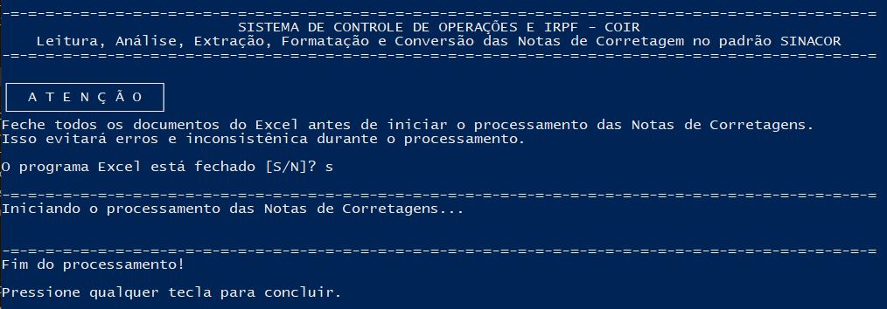

O que é a nota de corretagem no padrão SINACOR
SINACOR é a sigla de Sistema Integrado de Administração de Corretoras. As notas de corretagem emitidas nesse padrão são os documentos, geralmente em PDF, que a corretora disponibiliza com as operações feitas na B3 (Brasil, Bolsa e Balcão). Os dados dessas notas são a base para controlar operações, apurar a DARF mensal e preparar a declaração anual do Imposto de Renda.
Transcrever esses dados à mão, nota por nota, dá trabalho e abre espaço para erro. O COIR automatiza essa etapa: ele lê as notas e grava os dados em planilhas do Excel.
O que você precisa
- Microsoft Excel, em um Windows de 64 bits.
- As notas de corretagem no padrão SINACOR, baixadas do portal da sua corretora.
- O pacote
.zipdo COIR. O Python e o Java já vêm dentro dele: não é preciso instalar mais nada.
Passo a passo
1. Baixe e descompacte
Baixe o .zip da última Release e extraia todo o conteúdo para uma pasta de sua escolha. Não execute o programa de dentro do zip.
2. Coloque as notas na pasta Entrada
Baixe suas notas de corretagem no padrão SINACOR direto do portal da corretora e copie os arquivos para a pasta Entrada. Notas de corretoras diferentes podem ser colocadas juntas para o mesmo CPF.
3. Dê dois cliques em COIR.bat
O arquivo fica na pasta principal. Ao rodar, o COIR extrai automaticamente as notas que estiverem na pasta Entrada.
4. Abra o resultado
As notas processadas são movidas de Entrada para Saida. O resultado fica no arquivo Resultado\CPF.xlsb, onde CPF é o número do CPF do investidor. Ele reúne os dados em várias planilhas, como Normais, DayTrade, Contabilidade, DARF e Isentos. A função de cada uma está no guia planilhas do COIR para DARF, IRRF e IRPF.

Cuidados
Privacidade. As notas de corretagem e as planilhas geradas contêm dados pessoais, como CPF, operações e contas. Nunca as envie ao GitHub, em commits, issues ou pull requests. Se for relatar um problema, descreva o caso sem anexar as notas.
- Se o Windows alertar sobre o
python.exe(SmartScreen ou antivírus), é um aviso comum para programas baixados da internet; o arquivo faz parte do pacote. - Se a sua corretora não aparece entre as testadas, veja a lista em corretoras e mercados compatíveis e abra uma issue para que ela seja adicionada.
- O COIR organiza e calcula as informações das suas operações, mas não substitui a análise nem a responsabilidade de um profissional contábil.